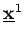
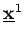
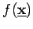
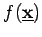

Inhalt Index DeskTop Bronstein

 Optimierung Nichtlineare Optimierung Verfahren für unrestringierte Aufgaben
Optimierung Nichtlineare Optimierung Verfahren für unrestringierte Aufgaben


Zwei Vektoren heißen konjugierte Vektoren bezüglich einer symmetrischen, positiv definiten Matrix  , wenn gilt
, wenn gilt
| (18.80) |
Sind paarweise konjugierte Vektoren bezüglich einer Matrix  , dann ist das konvexe quadratische Problem , in n Schritten lösbar, wenn ausgehend von einem beliebigen  die Folge
, dann ist das konvexe quadratische Problem , in n Schritten lösbar, wenn ausgehend von einem beliebigen  die Folge  gebildet wird, wobei
gebildet wird, wobei  als optimale Schrittweite in Abstiegsrichtung gewählt wird. Unter der Annahme, daß  in der Nähe des Minimalpunktes
als optimale Schrittweite in Abstiegsrichtung gewählt wird. Unter der Annahme, daß  in der Nähe des Minimalpunktes  annähernd quadratisch ist, d.h. , kann das für quadratische Zielfunktionen resultierende Verfahren auch auf allgemeinere Funktionen angewendet werden, ohne daß dabei explizit die Matrix benutzt wird.
annähernd quadratisch ist, d.h. , kann das für quadratische Zielfunktionen resultierende Verfahren auch auf allgemeinere Funktionen angewendet werden, ohne daß dabei explizit die Matrix benutzt wird.
Das Verfahren der konjugierten Gradienten besteht aus folgenden Schritten:
| (18.81) |
wobei eine geeignete Ausgangsnäherung für  ist.
ist.